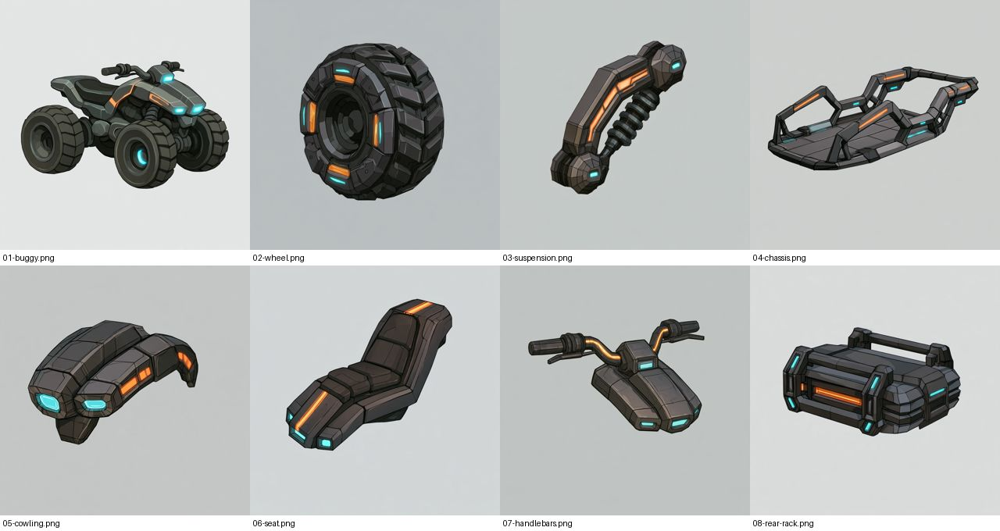
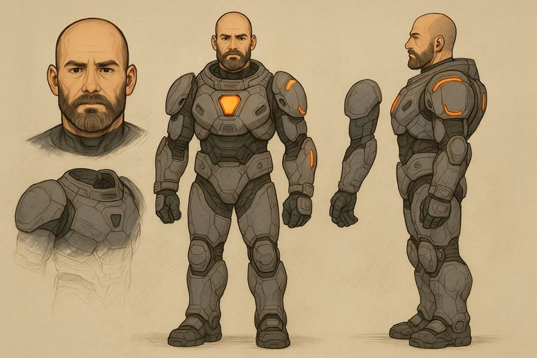
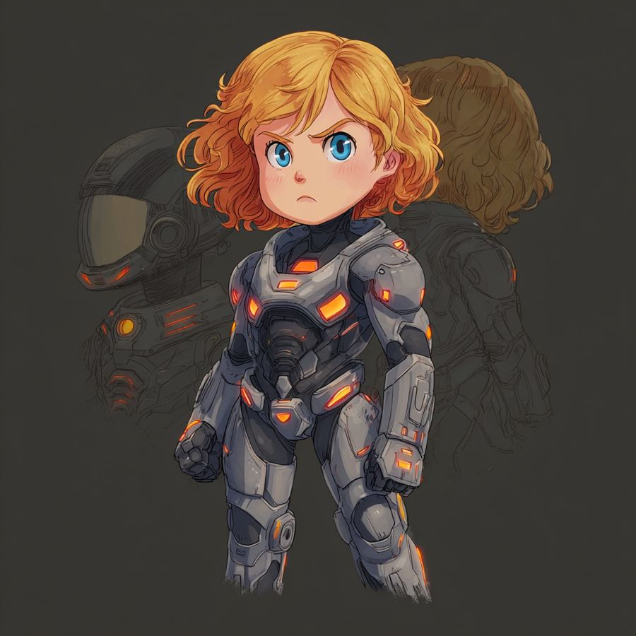
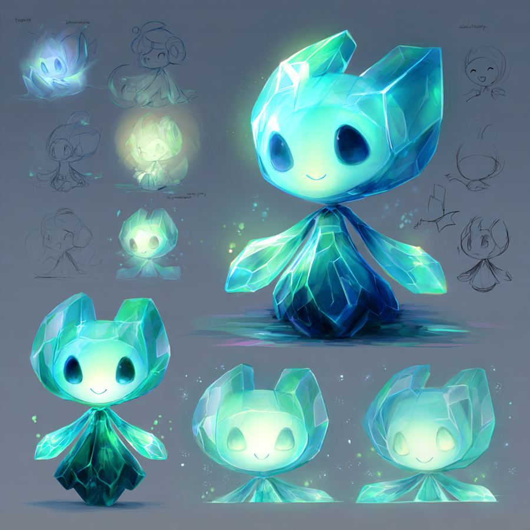
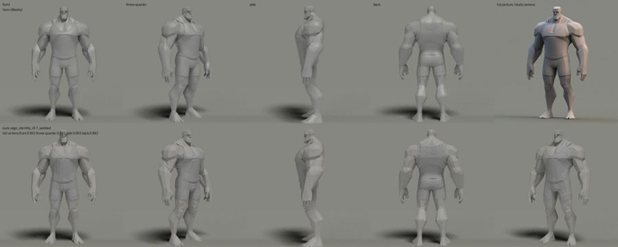

<title>Moon Heroes Art Direction</title>
<meta name="claude:viewport-fit-sides" content="cover">
<link rel="stylesheet" href="https://fonts.googleapis.com/css2?family=Barlow+Condensed:wght@600;700&family=Source+Sans+3:wght@400;600;700&family=JetBrains+Mono:wght@500&display=swap">
<style>
/* Mission-briefing column on a lunar night ground: one reading column, figures full width, option cards in a row. */
:root{--bg:#eef0f3;--paper:#ffffff;--ink:#1d2129;--muted:#5a6170;--line:#d3d8e0;--suit:#e8762c;--cyan:#1aa7b8;
--display:"Barlow Condensed",system-ui,sans-serif;--body:"Source Sans 3",system-ui,sans-serif;--mono:"JetBrains Mono",ui-monospace,monospace}
@media (prefers-color-scheme:dark){:root:not([data-theme="light"]){--bg:#0e1118;--paper:#171b24;--ink:#e7eaf0;--muted:#9aa3b3;--line:#2a3140;--suit:#f08a45;--cyan:#3fd0de;color-scheme:dark}}
:root[data-theme="dark"]{--bg:#0e1118;--paper:#171b24;--ink:#e7eaf0;--muted:#9aa3b3;--line:#2a3140;--suit:#f08a45;--cyan:#3fd0de;color-scheme:dark}
body{background:var(--bg);color:var(--ink);font:400 16px/1.55 var(--body);padding-left:max(16px,env(safe-area-inset-left,0px));padding-right:max(16px,env(safe-area-inset-right,0px));padding-block:28px 56px}
main{max-width:1060px;margin:0 auto;display:flex;flex-direction:column;gap:22px}
main>*{min-width:0}
.eyebrow{font:500 12px/1 var(--mono);letter-spacing:.12em;text-transform:uppercase;color:var(--suit)}
h1{font:700 clamp(36px,6vw,58px)/1 var(--display);margin:0;text-wrap:balance}
h2{font:700 30px/1.1 var(--display);margin:18px 0 0;text-wrap:balance}
h3{font:700 21px/1.15 var(--display);margin:0}
p{margin:0;max-width:72ch}.lede{font-size:19px}.muted{color:var(--muted)}
img{display:block;width:100%;height:auto;border-radius:10px;border:1px solid var(--line)}
.row{display:grid;grid-template-columns:repeat(auto-fit,minmax(220px,1fr));gap:12px}
.row figure{margin:0;display:grid;gap:6px}
figcaption{font:500 12px/1.4 var(--mono);color:var(--muted)}
.opts{display:grid;grid-template-columns:repeat(auto-fit,minmax(260px,1fr));gap:14px}
.opt{background:var(--paper);border:1px solid var(--line);border-radius:14px;padding:16px;display:grid;gap:8px;align-content:start}
.opt.pick{border-color:var(--suit);box-shadow:0 0 0 2px var(--suit) inset}
.badge{font:500 11px/1 var(--mono);letter-spacing:.08em;text-transform:uppercase;color:var(--suit)}
.rules{display:grid;gap:10px;padding-left:22px;margin:0;max-width:78ch}
.rules li::marker{color:var(--suit);font-weight:700}
.table-wrap{overflow-x:auto;border:1px solid var(--line);border-radius:12px;background:var(--paper)}
table{border-collapse:collapse;width:100%;min-width:620px;font-variant-numeric:tabular-nums}
th{font:500 11px/1.3 var(--mono);letter-spacing:.08em;text-transform:uppercase;color:var(--muted);text-align:left}
th,td{padding:10px 12px;border-bottom:1px solid var(--line);vertical-align:top}tr:last-child td{border-bottom:0}
code{font:500 13px/1.5 var(--mono);background:var(--paper);border:1px solid var(--line);border-radius:6px;padding:8px 10px;display:block;white-space:pre-wrap;word-break:break-word}
.swatches{display:flex;flex-wrap:wrap;gap:10px}
.sw{display:flex;align-items:center;gap:8px;font:500 12px/1.2 var(--mono)}
.sw i{width:28px;height:28px;border-radius:8px;border:1px solid var(--line);display:block}
</style>
<main>
 <header style="display:grid;gap:10px">
  <span class="eyebrow">AW-STUDY-0029 · Proposal</span>
  <h1>Moon Heroes: Faceted Hero</h1>
  <p class="lede">The art direction for the 25 Moon Base models. It is built on the one thing we're now very good at: a Meshy body cleaned up into crisp low-poly planes in Blender (the Bruiser G route, 99% faithful at 3,000 faces). Abbie and Daddy stay exactly who they are in the Moon Mission art. They just become solid, faceted, sculpted toys you can walk around.</p>
 </header>

 <section style="display:grid;gap:12px">
  <h2>First pictures in this style: the buggy</h2>
  
  <p class="muted">The whole buggy and seven parts, ready for Meshy: wheel, suspension, chassis, front with headlights, seat, handlebars, rear pod. Parts are shown three-quarter, because a wheel seen square-on is just a disc. The heroes are next.</p>
 </section>

 <section style="display:grid;gap:12px">
  <h2>Who they are already</h2>
  <div class="row">
   <figure><figcaption>Daddy: bald, short dark beard, broad and calm. Gunmetal armour, orange chest lamp.</figcaption></figure>
   <figure><figcaption>Abbie: copper bob, big blue eyes, determined brow. The same suit as Daddy, scaled to a kid.</figcaption></figure>
   <figure><figcaption>Star Child: cyan crystal, cat-like ears, a glow from inside.</figcaption></figure>
   <figure><figcaption>The buggy: dark quad, balloon tyres, cyan lights. Our most important model.</figcaption></figure>
  </div>
 </section>

 <section style="display:grid;gap:12px">
  <h2>What we've gotten good at</h2>
  
  <p class="muted">Meshy gets the shape right from one clean picture. Our cleanup then makes it ours: we seal the seams, name the body parts so a change can be asked for in words, cut it to any polygon count, flat-shade the planes and paint materials by role. Flat planes hide Meshy's lumpy noise, read clearly from the iso camera and in first person, and cost a fraction of a textured model (20 credits rather than 30).</p>
 </section>

 <section style="display:grid;gap:12px">
  <h2>Three directions</h2>
  <div class="opts">
   <div class="opt pick"><span class="badge">Recommended</span><h3>A. Faceted Hero</h3><p>Low-poly sculpted planes, flat shading, real materials: matte gunmetal armour, glowing orange suit lights, cyan machines, and Star Child in real glass. It looks like Tiny Glade's solidity on a Bricktales toy. It plays to Meshy plus cleanup exactly, and needs no textures.</p></div>
   <div class="opt"><h3>B. Pixel voxel</h3><p>The basement's 8-bit look, matching the pixel sprites in the Moon Mission art. It's charming and cheap, but Meshy adds little because voxels are built by hand, and it fights first-person low-gravity feel at close range.</p></div>
   <div class="opt"><h3>C. Painted storybook</h3><p>Matches the painted chapter art. Every model needs a hand-painted texture (30 credits, then paint-over), and it's the weakest at what we're good at. Better kept for the story cards and loading screens.</p></div>
  </div>
 </section>

 <section style="display:grid;gap:12px">
  <h2>The rules for Faceted Hero</h2>
  <ol class="rules">
   <li><b>Planes, not polish.</b> 6 to 8 planes around a limb, a crisp edge wherever bone or armour turns. Heroes 6,000 to 9,000 faces, props 1,000 to 3,000, buggy parts 1,500 each.</li>
   <li><b>Proportions.</b> Daddy is heroic and broad, about 7.5 heads, and kind, not a brute. Abbie is a toy-hero, about 4.5 heads, with a big head, big gloves and chunky boots, so she reads at any distance. Star Child is about knee height on Abbie.</li>
   <li><b>One suit, two sizes.</b> The same armour parts on both (chest lamp, shoulder plates, knee guards), so they look like a team and share materials.</li>
   <li><b>Colour means something.</b> Orange is people (suit lights, the base's warm windows). Cyan is the Moon's magic and machines (Star Child, buggy, light cycle, crystals). Gold is only for Daddy's memory coins.</li>
   <li><b>Glass you can see into.</b> Star Child, helmet visors and crystals are real glass with an inner glow: the liquid glass you like, as objects with depth.</li>
   <li><b>Light from one signal.</b> A hard white sun, blue Earthlight fill and a black sky. Long shadows and slow dust sell the low gravity; no fog and no haze.</li>
   <li><b>Faces stay theirs.</b> Abbie's face is the Moon Mission character's, never redrawn from a photo. PG throughout: the zapper turns gem bugs into sparkles.</li>
  </ol>
  <div class="swatches">
   <span class="sw"><i style="background:#3c414b"></i>Gunmetal armour</span>
   <span class="sw"><i style="background:#ff8a2a"></i>Suit light</span>
   <span class="sw"><i style="background:#2fd6e6"></i>Moon magic</span>
   <span class="sw"><i style="background:#b9bcc2"></i>Regolith</span>
   <span class="sw"><i style="background:#6f8fd8"></i>Earthlight</span>
   <span class="sw"><i style="background:#e3ab35"></i>Memory gold</span>
  </div>
 </section>

 <section style="display:grid;gap:12px">
  <h2>Reference pictures, the way the post-mortem taught us</h2>
  <p class="muted">The Bruiser went wrong because his picture was turned 23° and nobody checked. Every Moon hero's Midjourney picture follows these rules before Meshy sees it:</p>
  <ol class="rules">
   <li>Square to the camera, full body, on a plain background, with the turn checked before Meshy.</li>
   <li>A-pose with arms a little away from the body, so Meshy can separate them.</li>
   <li>A turnaround sheet (front, side, back) for every hero, used for the second Meshy run.</li>
   <li>Parts on their own part sheet (the buggy's wheel, seat and so on), one part per frame.</li>
   <li>Helmets off and as separate models, so faces show and helmets can go on and off.</li>
  </ol>
  <code>low-poly faceted 3D game character, flat-shaded planes, matte gunmetal sci-fi armour with glowing orange light strips, [Daddy: bald man, short dark beard, broad heroic build | Abbie: young girl, copper bob haircut, big blue eyes, toy-hero proportions, big gloves and boots], A-pose, full body, front view, orthographic, plain light grey background, no helmet --ar 2:3</code>
 </section>

 <section style="display:grid;gap:12px">
  <h2>The 25, in this style</h2>
  <div class="table-wrap"><table>
   <thead><tr><th>Group</th><th>Models</th><th>Faces</th><th>Note</th></tr></thead>
   <tbody>
    <tr><td><b>Buggy</b></td><td>Whole buggy, wheel, suspension, chassis, front and headlights, seat, handlebars, rear pod</td><td>1,500 per part</td><td>Fine-grained so it can bounce, lose a wheel and be upgraded</td></tr>
    <tr><td><b>Heroes</b></td><td>Daddy, Daddy's helmet, Abbie, Abbie's helmet, Star Child</td><td>6,000–9,000</td><td>Rigged; glass visors</td></tr>
    <tr><td><b>Base</b></td><td>Dome, tower and antenna, habitat and hangar, airlock</td><td>2,000–5,000</td><td>Warm orange windows at night</td></tr>
    <tr><td><b>Shooter</b></td><td>Gem bug, crystal zapper, crystal pickup, crate, light cycle</td><td>1,000–4,000</td><td>The zapper is the first-person hero prop</td></tr>
    <tr><td><b>Lander</b></td><td>Outside, cockpit inside, leg and engine bell</td><td>medium, 8,000–15,000</td><td>Designed by us; the landing game shows the camera in picture-in-picture and ends with a Moon memory coin</td></tr>
   </tbody>
  </table></div>
 </section>

 <section style="display:grid;gap:8px">
  <h2>Open question</h2>
  <p>In the shooter, who are you? Abbie, with Daddy as the partner who calls out over the radio, fits the story best: her small gloves on the zapper in first person, Daddy's voice in your ear. Until you pick, I'm assuming Abbie.</p>
 </section>
</main>
